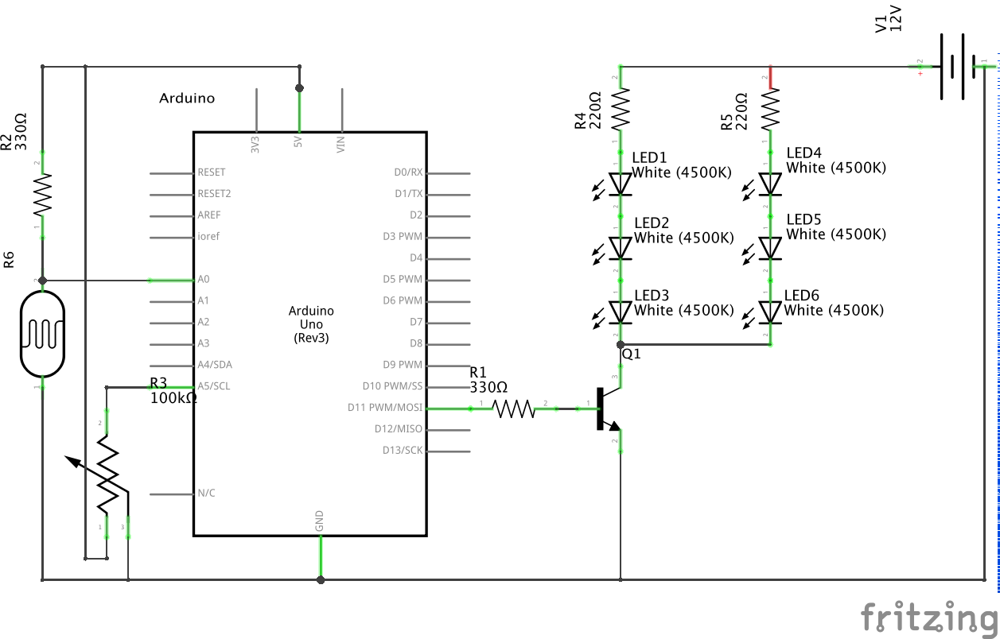
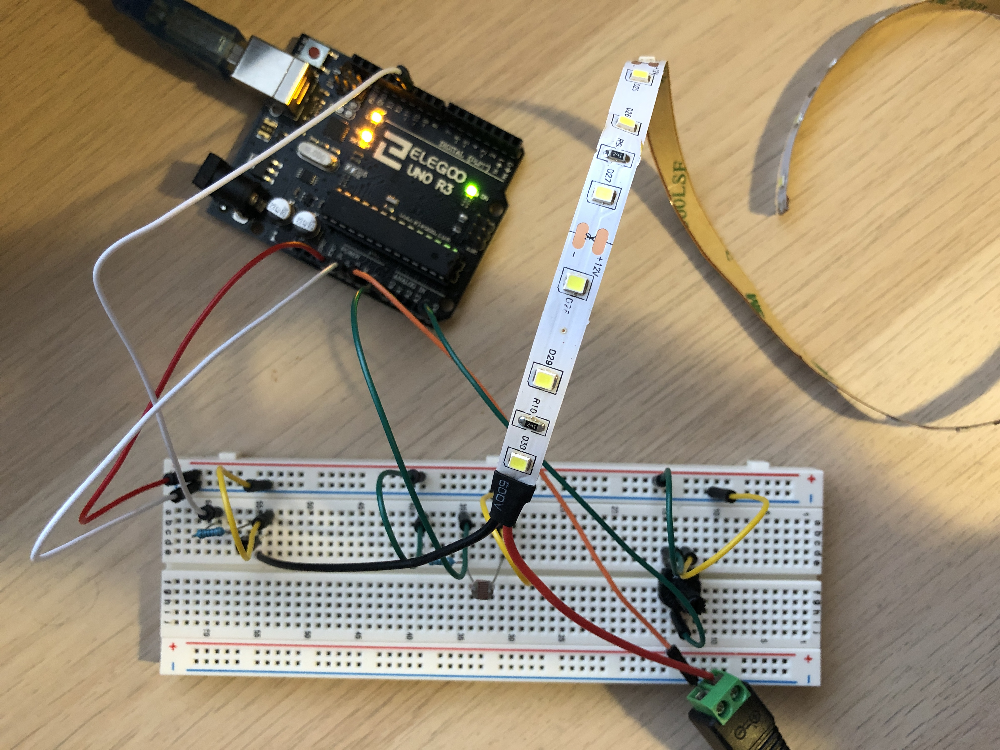

Arsh's Assignment 7!
Circuit in operation

The photoresistor changes the color of the circle. The potentiometer changes the size of the circle. I was unable to get my LED strip's brightness to change based on keys inputted from the keyboard. For the life of me, I could not find the error in my code that was causing it not to work.
Calculations
V = I*R
5 = 0.02*R
R = 250 Ω
This calculation shows the minimum resistance required for the photoresistor. I used 330 Ω resistors to be safe.
Schematic

Circuit

Arduino Code Snippet
// setting up pin & serial monitor
void setup() {
Serial.begin(9600); // begin serial communications at 9600 bps
Serial.setTimeout(10); // set the timeout for parseInt
pinMode(11, OUTPUT); // sets pin 11, which is connected to the LED strip, as an output
}
// this function will loop forever
void loop() {
// reads ASCII value from keyboard character pressed to determine brightness of LED strip
if (Serial.available() > 0) { // if there is serial data
int inByte = Serial.read(); // read it
Serial.write(inByte); // send it back out as raw binary data
analogWrite(11, inByte); // use it to set LED strip brightness
}
int s1 = analogRead(A0); // reads values from the photoresistor
int s2 = analogRead(A5); // reads values from the potentiometer
// prints the values that have been read to the serial monitor in array form
Serial.print("[");
Serial.print(s1);
Serial.print(",");
Serial.print(s2);
Serial.println("]");
}
Javascript Code Snippet
var serial; // variable to hold an instance of the serialport library
var portName = '/dev/cu.usbmodem14201' //rename to the name of your port
var diameter = 10; // set default diameter of circle
var color = 255; // set default color of circle
var dataarray = []; // empty array for serial values to be read into
function setup() {
serial = new p5.SerialPort(); // make a new instance of the serialport library
serial.on('list', printList); // set a callback function for the serialport list event
serial.on('connected', serverConnected); // callback for connecting to the server
serial.on('open', portOpen); // callback for the port opening
serial.on('data', serialEvent); // callback for when new data arrives
serial.on('error', serialError); // callback for errors
serial.on('close', portClose); // callback for the port closing
serial.list(); // list the serial ports
serial.open(portName); // open a serial port
createCanvas(1200, 800);
}
// get the list of ports:
function printList(portList) {
for (var i = 0; i < portList.length; i++) { // portList is an array of serial port names
print(i + " " + portList[i]); // Display the list the console
}
}
// prints whether program is connected to server
function serverConnected() {
print('connected to server.');
}
// prints whether serial port was opened
function portOpen() {
print('the serial port opened.')
}
// prints serial port errors
function serialError(err) {
print('Something went wrong with the serial port. ' + err);
}
// prints whether serial port was closed
function portClose() {
print('The serial port closed.');
}
// prints out readings from serial port
function serialEvent() {
if (serial.available()) {
var datastring = serial.readLine(); // readin some serial
var newarray;
try {
newarray = JSON.parse(datastring); // can we parse the serial
} catch(err) {
console.log(err);
}
if (typeof(newarray) == 'object') {
dataarray = newarray;
color = dataarray[0];
diameter = dataarray[1];
}
console.log("got back " + datastring);
}
}
// writes serial value to monitor if a key is pressed
function keyPressed() {
console.log("writing key");
serial.write(key);
}
// draws based on potentiometer and photoresistor values
function draw() {
background(255); // set background to white
fill(color - 900); // set circle colored based on photoresistor value
ellipse(600, 400, diameter, diameter); // set circle diameter from potentiometer value
}